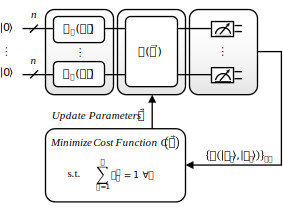

Quantum Computing Patterns
Quantum Clustering
Aliases: –
Tags: algorithm
© L. Stiliadou, J. Barzen, M. Beisel, F. Leymann, and B. Weder, Patterns for Quantum Machine Learning, in Proceedings of the 17th International Conference on Pervasive Patterns and Applications (PATTERNS), Xpert Publishing Services (XPS), 2025.
Intent
How to partition a data set into different clusters based on their similarity utilizing a quantum device?
Context
A set of unlabeled data needs to be grouped into different clusters. The clusters should organize the data points according to identified similarities.
Forces
Data sets may exhibit non-linear separability, which increases the complexity when clustering. Moreover, data sets utilized in machine learning continuously grow in size, leading to increased training times [Achiam et al., 2023]. Therefore, algorithms whose runtime scales well with the number of data points in the data set and the dimensions of the feature space are required. In addition to the general machine learning forces, also quantum-specific forces have to be taken into account. For example, loading large data sets consisting of many tuples into current quantum devices is difficult due to the high circuit depth of the required state preparation routines [Akshay et al., 2020] [Preskill, 2018].
Solution
Figure 2 gives an overview of the general clustering process. Use a quantum device to cluster the m data points \(\newcommand{\state}[1]{{\left| #1 \right>}}\{\state{x_i}\}^m_{i=1}\) of a data set. First, the classical data points are encoded into quantum states \(\newcommand{\state}[1]{{\left| #1 \right>}}\{\state{x_i}\}^m_{i=1}\) by applying a unitary transformation \(U_ϕ\), enabling the quantum computer to process the data. Once the data points are encoded, a given ansatz \(V(\vec{θ})\) is used to calculate the similarity between data points. The ansatz is a parameterized quantum circuit designed to approximate the quantum state that captures the relevant features of the data for similarity measurement. The ansatz computes the similarity either between pairwise data points or between all data points, depending on its structure [Poggiali et al., 2024]. The cost function used in this approach is designed to assign similar points to the same cluster and points with low similarity to different clusters. In the cost function, this is represented by a penalty term that penalizes distant points that are assigned to the same cluster. Additionally, the clustering process is controlled by adding constraints. To ensure that each data point is assigned to exactly one cluster, the following condition must hold \(\sum^{k}_{a=1} q^a_i = 1\). Thereby, classical variables \(q^a_i\) are introduced to denote whether a data point \(x_i\) is assigned to cluster a. The quantum circuit parameters are updated iteratively to minimize the cost function.

Result
Utilizing a quantum clustering algorithm may enable identifying clusters in a data set exponentially faster than with a classical clustering algorithm [Khan et al., 2019c]. Often, the computational advantage of quantum clustering algorithms relies on the availability of the input data in a suitable format. Once an implementation of Quantum Random Access Memory (QRAM) Encoding is available, data can be encoded efficiently, enabling the full potential of quantum clustering.
Examples
An exemplary quantum clustering algorithm is the quantum k-means algorithm Khan et al., 2019b [Wu et al., 2021]: First, k initial data points are randomly selected as centroids for the clustering. Then, the states for both the centroids as well as the remaining data points are prepared. The number k, which corresponds to the number of clusters, can either be specified by the user or automatically determined [Khan et al., 2019a]. Subsequently, for each data point, the distance to all centroids is calculated utilizing a distance metric, e.g., the Manhattan distance [Wu et al., 2021] or Euclidean distance [Khan et al., 2019c]. For example, the SWAP test [Buhrman et al., 2001] can be used to determine the Euclidean distances efficiently on a quantum device. Each data point is assigned to the cluster corresponding to the centroid with the smallest distance to the data point. Afterward, the new centroids are calculated classically by computing the mean of all data points assigned to that cluster. If the retrieved centroids differ substantially, i.e., more than a certain threshold specified by the user, from the previous iteration, the previously described procedure is performed again utilizing the new centroids.
Related Patterns
The Quantum Random Access Memory (QRAM) Encoding pattern [Weigold et al., 2021a] can be used to efficiently encode the data points for a quantum device. To facilitate the clustering of complex data sets, the data points can be mapped into a higher dimensional feature space using the Quantum Kernel Estimator (QKE) pattern. The Quantum Clustering pattern uses the Quantum-Classic Split pattern [Leymann, 2019] to efficiently distribute the computations using quantum and classical hardware and can be realized as a Hybrid Module [Bühler et al., 2023].
This pattern is a refinement of Quantum-Classic Split (Leymann 2019). Within the quantum computation, Initialization (Leymann 2019) is used.
Quantum Clustering
is related to
Quantum Clustering
can be used with
Quantum Clustering
is related to
Quantum Clustering
is related to
Known Uses
Ramirez [Ramirez, 2024] presents different quantum clustering techniques, such as quantum spectral clustering and quantum hierarchical clustering. Kavitha et al. [Kavitha and Kaulgud, 2023] utilize quantum k-means clustering for detecting heart diseases. Patil et al. [Patil et al., 2023] introduce two measurement-based quantum clustering algorithms. The first algorithm follows a hierarchical clustering approach. The second algorithm uses unsharp measurements for the clustering process. Gopalakrishnan et al. [Gopalakrishnan et al., 2024] propose a quantum clustering algorithm that achieves linear scalability with respect to both the number of data points and their density.